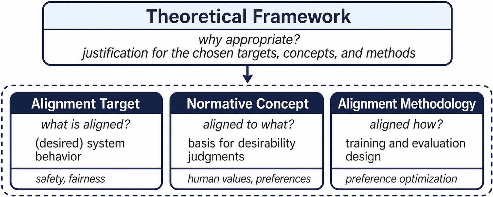

As AI systems become embedded in social contexts, they must meet not only functional goals, such as producing accurate recommendations or predictions, but also normative expectations about how they should "behave" in society, for example by being fair, accountable, and respectful in their interactions. This broader challenge of specifying, modeling, and evaluating socially desirable AI behavior across social contexts is referred to as sociotechnical alignment.
We propose an alignment specification framework that distinguishes four interrelated dimensions of sociotechnical alignment: the normative concept invoked, the alignment domain in which it is operationalized, the alignment methodology used to model and evaluate it, and the theoretical framework used to justify these choices across domains and populations.
We provide an overview of NLP literature (from ACL Anthology) on sociotechnical alignment, its normative objectives, domains, methodologies, and theoretical grounds. The analysis of this corpus shows that sociotechnical alignment research focuses primarily on technical aspects and safety constraints, with remaining work on bias, fairness, and personalization, and comparatively little on population-level value and moral compatibility. Moreover, normative concepts are often left unspecified or conflated with alignment domains; target populations are frequently underdefined; and design choices are rarely theoretically justified. We discuss the implications of this fragmentation for research and practice, and offer recommendations for connecting social-scientific frameworks to alignment design choices and enabling more conceptually precise approaches to sociotechnical alignment.
The number of publications on alignment has increased over the years, reflecting growing interest in this area. The majority of the papers focus on the technical aspects of alignment, while a smaller portion addresses sociotechnical alignment, though the number of sociotechnical contributions are steadily increasing.
Manually assigned domain labels show that a large portion of papers on sociotechnical alignment leave the domain underspecified, while the rest of the papers are distributed across a range of domains, with the most common being "safety", "culture", "demographic factors", and "personalization".
Automatically identified topical clusters show that papers on sociotechnical alignment can be grouped into clusters that reflect different ways of framing the problem of sociotechnical alignment, such as "alignment as preference aggregation and optimization", "alignment as safety constraints", "alignment as bias assessment", and "alignment as value and moral compatibility".
Most manually assigned domain labels and automatically identified topical clusters largely overlap, but there are some discrepancies. This is partly due to terminological imprecision in paper abstracts, which makes it difficult to assign precise domain labels, and also due to different emphases in framing the problem of sociotechnical alignment, which may not be fully captured by domain labels.